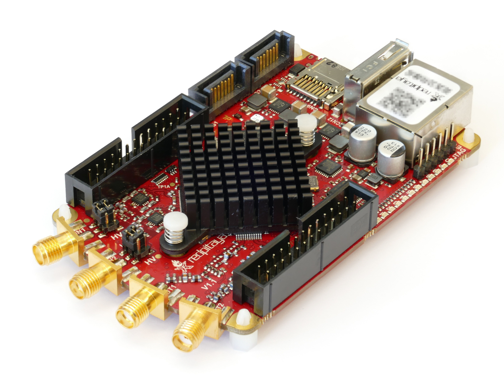

Projects
Research and selected projects across machine learning, multi-agent systems, signal processing, and embedded systems.
Research
-

Wildfire Spread Prediction using U-Nets
Research Assistant · University of Illinois Chicago, Jan 2026–present
Deep learning research for environmental prediction using U-Net architectures.
-
🎮
Single-Agent Poisoning Attacks in Multi-Agent Learning Environments
IDEAL Summer Research · Northwestern University, Jun–Aug 2026
Research on mixed-autonomy systems, game theory, and deep learning for multi-agent settings.
-

Spectral Analysis on FPGA for Detection of Astrophysical Signals
Research Intern · Paris Observatory | PSL, Jun–Jul 2024
Python-based FFT signal processing on Red Pitaya for weak astrophysical signal detection.
Machine Learning & AI Projects
-
AI
AI Agent for Murlan (Self-Play Reinforcement Learning)
Personal Project, Dec 2025
Designed an RL environment and trained a self-play PPO agent with a policy-value network and legal-action masking for a multi-agent Albanian card game.
-
🌍
Unveiling Regional Dynamics: A Comparative Study of Balkan Countries in 2023
University of Chicago, Mar 2025 · PCA, k-means, unsupervised learning
Applied unsupervised learning to profile Balkan countries based on national characteristics.
Sorbonne Université (2022–2025)
-
❤️
Heart Rate Monitor Circuit
Sorbonne University, Apr 2024 · OrCAD PSpice, Raspberry Pi
Simulated the analog and digital circuit blocks, then acquired and processed circuit data to estimate BPM.